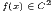
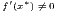
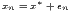
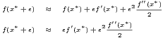
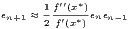
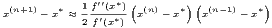
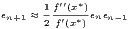
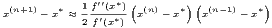

j=1n tais que x
j+1 > xj, ou seja, as abscissas são
distintas e estão em ordem crescente; um spline cúbico que interpola estes pontos é uma
função s(x) com as seguintes propriedades:
j=1n tais que x
j+1 > xj, ou seja, as abscissas são
distintas e estão em ordem crescente; um spline cúbico que interpola estes pontos é uma
função s(x) com as seguintes propriedades:
Dado um conjunto de n pontos j=1n tais que x
j+1 > xj, ou seja, as abscissas são
distintas e estão em ordem crescente; um spline cúbico que interpola estes pontos é uma
função s(x) com as seguintes propriedades:
Da primeira hipótese, escrevemos
![s(x ) = s(x ),x ∈ [x ,x ], j = 1,...,n - 1
j j j+1](main1734x.png)

Veremos que a simples definição de spline produz 4n - 6 equações linearmente independentes:
 |
Como
 | (6.5) |
e


 | (6.6) |
temos, para j = 1,…,n - 1, as seguintes equações
 |
Por simplicidade, definimos


 | (6.7) |
que podem ser escrita da seguinte maneira
 | (6.8) |
 | (6.9) |


 | (6.10) |
Trocando o índice j por j - 1 na terceira equação (6.7), j = 2,…,n - 1
 | (6.11) |
e, portanto,


 | (6.12) |
Fazendo as simplificações, obtemos:
 | (6.13) |
É costumeiro acrescentar a incógnita cn ao sistema. A incógnita cn não está relacionada a nenhum dos polinômios interpoladores. Ela é uma construção artificial que facilita o cálculo dos coeficientes do spline. Portanto, a equação acima pode ser resolvida para j = 2,…,n - 1.
Para determinar unicamente os n coeficientes cn precisamos acrescentar duas equações linearmente independentes às n - 2 equações dadas por (6.13). Essas duas equações adicionais definem o tipo de spline usado.


Uma forma de definir as duas equações adicionais para completar o sistema (6.13) é impor condições de fronteira livres (ou naturais), ou seja,
 | (6.14) |
Substituindo na equação (6.6)


 | (6.15) |


 | (6.16) |
Observe que a matriz A é diagonal dominante estrita e, portanto, o sistema Ac = z possui solução única. Calculado c, os valores dos an, bn e dn são obtidos diretamente pelas expressões (6.8), (6.10) e (6.9), respectivamente.
Exemplo 6.8.1. Construa um spline cúbico natural que passe pelos pontos (2, 4,5), (5, - 1,9), (9, 0,5) e (12, - 0,5).
Solução. O spline desejado é uma função definida por partes da forma:


| (6.17) |
Os coeficientes c1, c2 e c3 resolvem o sistema Ac = z, onde
 |
 |
Observe que c4 é um coeficiente artificial para o problema. A solução é c1 = 0, c2 = 0,7, c3 = -0,4 e c4 = 0. Calculamos os demais coeficientes usando as expressões (6.8), (6.10) e (6.9):
|
|
No Scilab, podemos utilizar:  
♢
Alternativamente, para completar o sistema (6.13), podemos impor condições de contorno fixadas, ou seja,
 | (6.18) |
e
|
| (6.19) |
Usando as equações (6.9) e (6.10) para j = 1 e j = n - 1, temos:
|


| (6.20) |
e
|
| (6.21) |
Essas duas equações juntamente com as equações (6.13) formam um sistema de n equações Ac = z, onde
 |
 |
Observe que a matriz A é diagonal dominante estrita e, portanto, o sistema Ac = z possui solução única. Calculado c, os valores dos an, bn e dn são obtidos diretamente pelas expressões (6.8), (6.10) e (6.9), respectivamente.

 Exemplo 6.8.2. Construa um spline cúbico com fronteira fixada que interpola a
função y = sin(x) nos pontos x = 0, x = , x = π, x =  e x = 2π.
Exemplo 6.8.2. Construa um spline cúbico com fronteira fixada que interpola a
função y = sin(x) nos pontos x = 0, x = , x = π, x =  e x = 2π.
O spline desejado passa pelos pontos (0,0), (π∕2,1), (π,0), (3π∕2,- 1) e (2π,0) e tem a forma:
 |
Observe que ele satisfaz as condição de contorno f′(0) = cos(0) = 1 e f′(2π) = cos(2π) = 1.
Os coeficientes c1, c2, c3 e c4 resolvem o sistema Ac = z, onde:
 |
 |
Aqui c5 é um coeficiente artificial para o problema. A solução é c1 = -0,0491874, c2 = -0,5956302, c3 = 0, c4 = 0,5956302 e c5 = 0,0491874. Calculamos os demais coeficientes usando as expressões (6.8), (6.10) e (6.9):


 |


No Scilab, podemos resolver este problema fazendo:


Dado um conjunto de pontos (xi,yi), i = 1,2,…,n, um spline cúbico é a seguinte função interpoladora definida por partes:
 |
Definindo-se hj = xj+1 - xj, os coeficientes cj, j = 1,2,…,n, são solução do sistema linear Ac = z, onde:
![|---------------------------------------|--------------------------------------|
|Spline Natural |Spline Fixado |
|s′′(x ) = 0 e s′′ (x ) = 0 |s′(x ) = f′(x ) e s′ (x ) = f′(x ) |
|-1--1-(------n-1--n--------------------|-1--1(------1----n-1--n-------n-------|
| ||| 1 ,j = i = 1 | ||| 2h1 ,j = i = 1 |
| |||| | |||| |
| |||| hi- 1 ,j = i- 1,i < n | |||| hi-1 ,j = i- 1 |
| |||{ | |||{ |
|ai,j = 2(hi + hi-1) ,j = i,1 < i < n |ai,j = 2(hi + hi-1) ,j = i,1 < i < n |
| ||| hi ,j = i+ 1,i > 1 | ||| hi ,j = i+ 1 |
| |||| | |||| |
| |||| 1 ,j = i = n | |||| 2hn-1 ,j = i = n |
| |||( | |||( |
| 0 ,caso contrário. | 0 ,caso contrário. |
| | |
| ( | ( |
| |||| 0 ,i = 1 | |||| 3y2h-1y1- 3f′(x1) ,i = 1 |
| { yi+1-yi yi-yi-1 | { yi+1-yi yi-yi-1 |
|zi = || 3 --hi--- 3 -hi-1-- ,1 < i < n |zi = || 3--hi--- 3-hi-1- ,1 < i < n |
| ||( 0 ,i = n | ||( 3f′(x )- 3yn-yn-1 ,i = n |
----------------------------------------------------n-------hn--1---------------|](main1825x.png) |
os coeficientes aj, bj e dj, j = 1,2,…,n - 1, são calculados conforme segue: